| SOURCE | TITLE| IMAGE MATCH | click to source page |
| www.ebay.com | Used 100p " Butterflies of Lebanon " Lebanon 1965 | eBay | 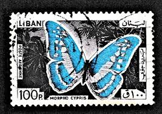 |
| www.ebay.com | Lebanon SG 879 Butterfly VFU (2erh) | eBay | 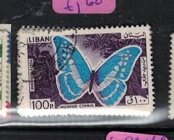 |
| www.ebay.com | Lebanon, Postage Stamp, #C433, C436 Used, 1965 Airpost ... | 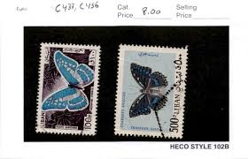 |
| colnect.com | Stamp: Cypris Morpho (Morpho cypris) (Lebanon(Butterflies ... | 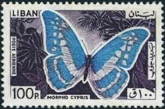 |
| www.avionstamps.com | Lebanon 1965 Blue Morpho Butterfly 100p Fine Commercial Used ... | 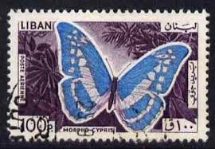 |
| www.ebay.com | Lebanon stamp C433 MH | eBay | 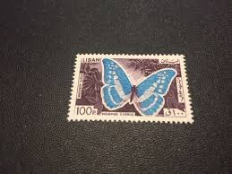 |
| esam.ir | تمبر کلاسیک لبنان | 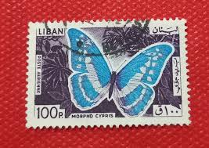 |
| www.mysticstamp.com | C427-35 - 1965 Lebanon - Mystic Stamp Company | 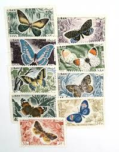 |
| www.alamy.com | Postage stamps of the Lebanon Stock Photo - Alamy | 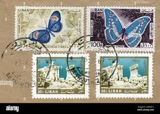 |
| esam.ir | تمبر باطله کلاسیک عربی کد 285 | 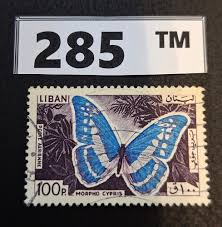 |
| jp.mercari.com | 外国切手8枚セット（レバノン：蝶切手） - メルカリ | 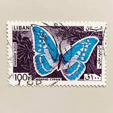 |
| www.shutterstock.com | Ankaratürkiye 08112023 Lebanon Postage Stamp Shows ... | 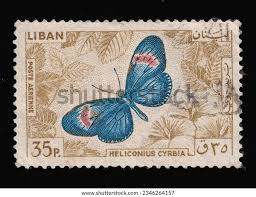 |
| www.facebook.com | Guyana postage stamp on butterflies - Stalachtis calliope ... | 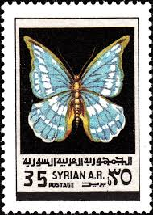 |
| en.todocoleccion.net | libano 1961 - vista de zahle - usado - Buy Stamps from other ... | 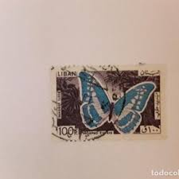 |
| www.dreamstime.com | Stamp Printed in Hungary Shows a Butterfly Editorial Image ... | 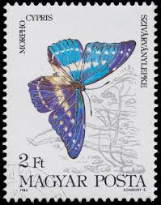 |
| stampdigest.in | Butterflies on Stamps – Lebanon 1965. – Stamp Digest | 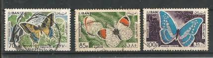 |
| www.hipstamp.com | Lebanon C433 Morpho Cypris 1965 | Middle East - Lebanon, Air ... | 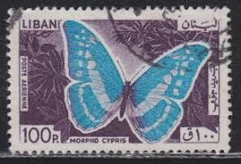 |
| www.freestampcatalogue.com | Stamps from Malawi - Freestampcatalogue.com - The free ... | 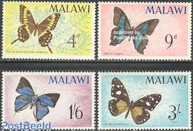 |
| www.ebay.com | Overprint 100p on 500p " Butterflies of Lebanon" 1972 | eBay | 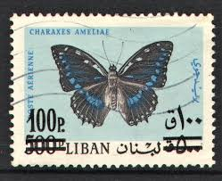 |
| www.eelke.li | Taxonomy of Stamps, Country Liban | 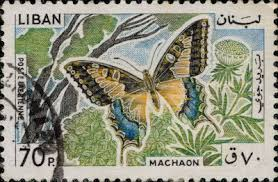 |
| freestampmagazine.com | World's First Stamp for Butterfly Topic Collectors ... | 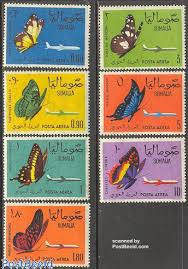 |
| becausesciencedc.com | Blue Morpho Butterfly Circuit Board Art - 8x10 – Because Science | 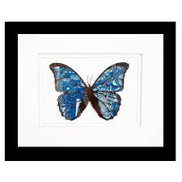 |
| www.leboncoin.fr | Timbre Liban PA N°555/57 Obl (FU) 1972 - Papillons - Collection | 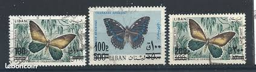 |
| www.hipstamp.com | Fujeira Stamp- Colorful Beautiful Lovely Butterfly Large CTO ... | 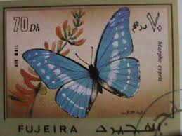 |
| aukro.cz | Libanon fauna | Aukro | 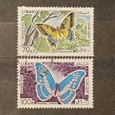 |
| www.alamy.com | Morpho cypris hi-res stock photography and images - Alamy | |
| allegro.pl | Liban D536 fauna motyle wysokie nominały • Cena, Opinie ... | 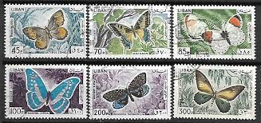 |
| www.flickr.com | Patri X | Flickr | 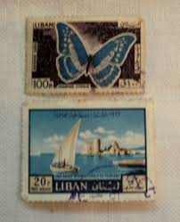 |
| www.stampcommunity.org | Everything's Coming Up Butterflies! - Page 14 - Stamp ... | 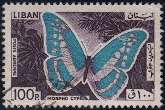 |
| abrostamps.com | Butterflies – ABRO Stamps & Coins | 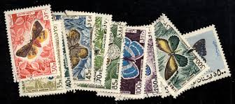 |
| www.stampcollectingblog.com | Constant variations on 1970 Ecuadorian butterfly postage stamp | 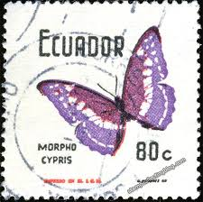 |
| www.todocoleccion.net | sello usado. líbano. mariposas. mariposa muso. - Compra ... | 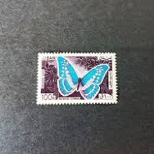 |
| www.instagram.com | Butterflies Souvenir sheet . A while back, while I was ... | 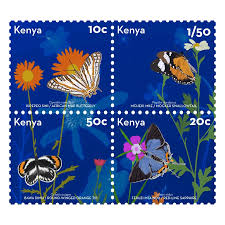 |
| www.tulias.com | Blue Morpho Butterfly Ornament Notecard Gift – Tulia's ... | 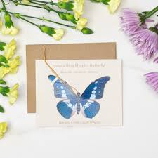 |
| www.shutterstock.com | 27 Cyprus Morpho Royalty-Free Images, Stock Photos ... | 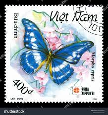 |
| www.buyhungarianstamps.com | Mongolia - 331-337 - Butterflies (MNH) – Eastern Europe ... | 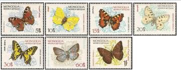 |
| butterfly-designs.com | Morpho cypris Blue Morpho - Framed Butterfly Taxidermy | 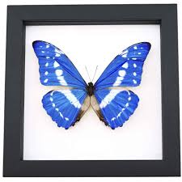 |
| encyclopaediaphilatelica.net | crimson-patched longwing (Heliconius cyrbia) - Encyclopaedia ... | 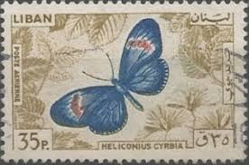 |
| www.reddit.com | Collecting stamps from the Popular Republic of China can get ... | 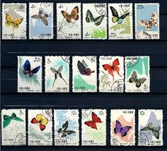 |
| naturalcuriosities.com | Hubbard Butterfly, Small: 135 | 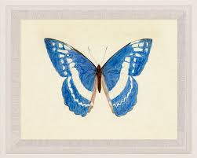 |
| www.audubonart.com | Merian Pl. 9, Morpho Menelaus | Metamorphosis Insectorum ... | 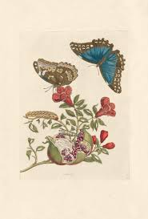 |
| www.leboncoin.fr | Philatélie ( 17 Timbres poste du VIETNAM ) - Collection | 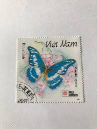 |
| riojournal.com | Taxonomy at Face Value: An assessment of entomological ... | 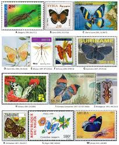 |
| www.moth-and-myth.com | Paper Blue and White Morpho Butterfly Value-Pack - Moth & Myth | 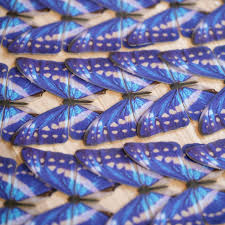 |
| www.etsy.com | Rare Blue Morpho Butterfly Framed Taxidermy - Morpho Cypris ... | 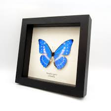 |
| www.ebay.com | Lebanon, Postage Stamp, #C433, C436 Used, 1965 Airpost ... | 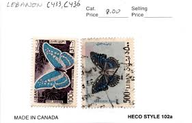 |
| filateliakevorkian.com | LIBANO/SELLOS, 1965 - MARIPOSAS - YV A 332/41 - 10 VALORES ... | 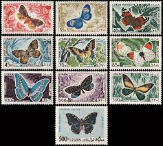 |
| fineartamerica.com | Mounted Morpho Butterflies (morpho Sp.) Photograph by Pascal ... | 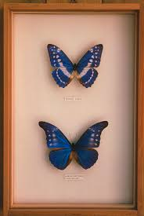 |
| www.istockphoto.com | 1,300+ Butterfly Stamp Stock Photos, Pictures & Royalty-Free ... | 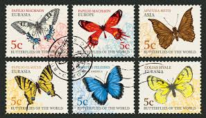 |
| www.moth-and-myth.com | Paper Blue Mother-of-Pearl Butterfly - Moth & Myth | |
| www.facebook.com | 1963 Chinese Butterflies stamp set (特56 ... | 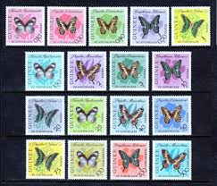 |
| www.kitantik.com | Lübnan Pulu - Lebanon Stamp - Mektup Zarfından Kesilmiş ... | 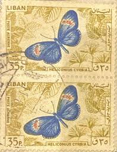 |
| esam.ir | 4 تمبر سری پروانه لبنان | |
| www.jade.dti.ne.jp | キプリスモルフォ | |
| www.etsy.com | 15 Tiny Blue Paper Butterflies, Galaxy Micro Set, Miniature ... | |
| au.pinterest.com | 320 Bug and Insect Stamps ideas to save today | bugs and ... | |
| mtl.boutique-ab.com | C-0428 (Liban) ⬛ | |
| community.postcrossing.com | Fake Aussie Stamps/Recipient paying fees - Oceania ... | |
| www.maxstern.com.au | Papua New Guinea 1966-67 Butterflies Set of 12 Definitive ... |